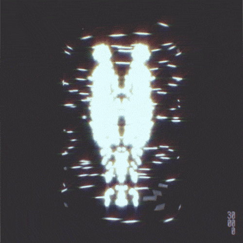
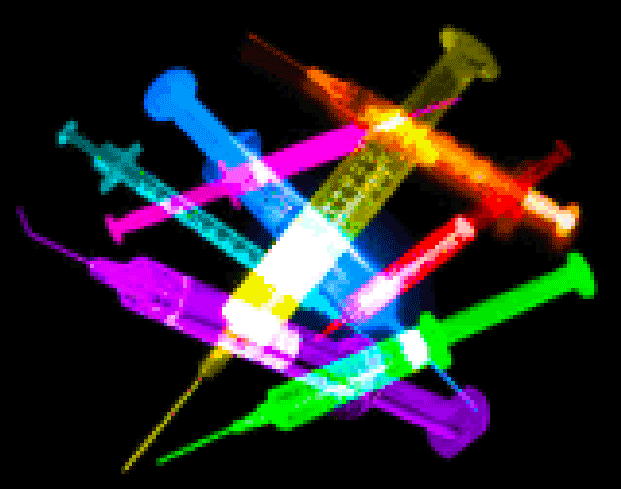
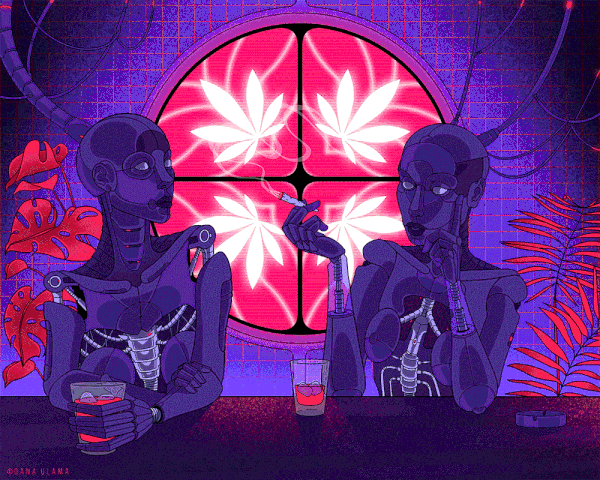
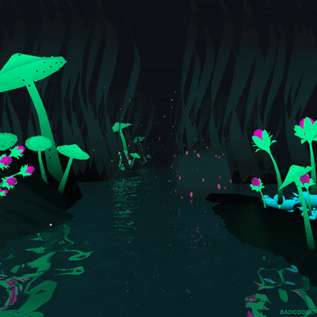
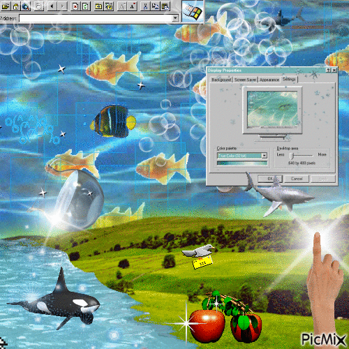

◉SPOTIFY // PLAYLIST
𖦹 playlist #01
una señal directa desde mi universo
open in Spotify ↗recibiendo señal...
MARCianito.exe // v.∞
somewhere between earth & the internet
Un pequeño rincón de Internet para mis redes, música, bots, tarot y las cosas raras que encuentro por ahí.
Soy Marcianito: estudiante, creadora de bots, tarotista y persona que disfruta convertir Internet en un lugar un poquito más raro y divertido.

USER: MARCIANITOSMOKEY
MOOD: floating...
LOCATION: somewhere
STATUS: ONLINE
Dale play y deja que el portal haga lo suyo.
una señal directa desde mi universo
open in Spotify ↗otra dimensión, misma criatura
open in Spotify ↗Un archivo caótico de GIFs, imágenes y señales encontradas. Toca cualquiera para verla en grande.














No sustituye una lectura profesional: es un pequeño juego interactivo para explorar símbolos.
Elige el nombre que quieras. Tu mensaje se guarda localmente en este navegador.
Nota: GitHub Pages es estático. Para comentarios públicos compartidos entre todos los visitantes se necesita conectar una base de datos/servicio externo; esta versión no expone datos personales y funciona sin backend.
SECRET CHANNEL // 404
Entonces probablemente mereces encontrar los secretos.